# opções
options(
# permitir RStudio Addins no command pallet
vsc.rstudioapi = TRUE,
# gráficos interativos com o {httpgd}
vsc.use_httpgd = TRUE,
# alterar o schema de highlight no console Radian
radian.color_scheme = "native",
# adicionar code completion após $
languageserver.server_capabilities = list(
signatureHelpProvider = list(triggerCharacters = list("(", ",", "$")),
completionProvider = list(
resolveProvider = TRUE, triggerCharacters = list(".", ":", "$")
)
)
)Comecei a usar o VSCode em outubro de 2020 quando comecei a estudar Python. Pesquisando sobre o setup ideal, li que a IDE de menor impacto para usuários de R (R Core Team 2020) seria o Spyder, mas que a experiência de um usuário Python nativo seria com o VSCode, então foi pra lá que eu fui, mesmo sendo uma experiência mais complicada.
Rapidamente me apaixonei por sua capacidade e maturidade. Há extensões da comunidade para tudo, o que torna a experiência muito agradável! Entretanto, o ecossistema do R ainda era muito voltado ao RStudio e eu ainda me via preso naquela IDE no meu dia-a-dia com o R. Claro que isso mudou quando vi um tweet do Miles McBain sobre a adição dos RStudio Addins ao VSCode.
Passando a considerar o VSCode como uma possibilidade real para R, dei uma pesquisada e achei esse post do Kun Ren que oferece um setup para trabalhar em R no VSCode. Neste post falo das funcionalidades e de como configurar.
1 QUAL A BOA DO VSCODE?
A maioria das funcionalidades implementadas pela extensão do R ou pelo Language Server já estão detalhadas no post do Kun Ren, então, se ainda não leu, corre lá! Aqui vou demonstrar algumas funcionalidades gerais e extensões que salvam minha vida no dia-a-dia.
1.1 Intellisense
Esse ouro do VSCode te permite ver a documentação da função (quick info), ou do dataset, e de todos seus argumentos (parameter info) apenas passando o mouse em cima. Além disso, é a funcionalidade que adiciona code completion e member list, dentre outros.
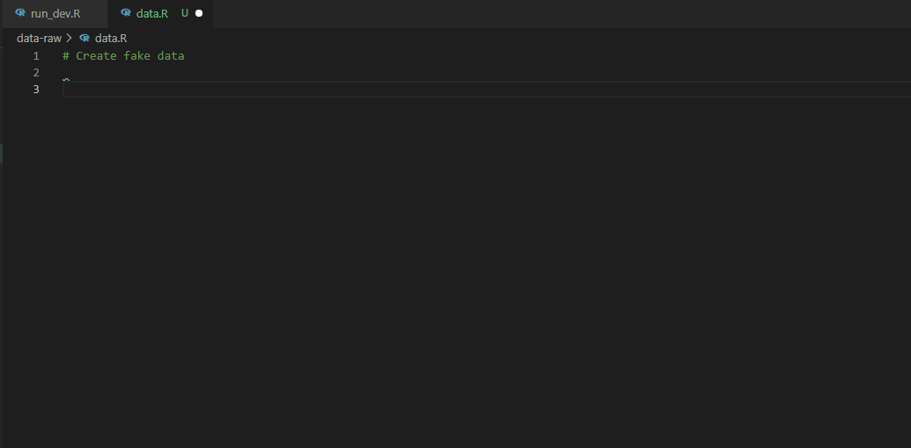
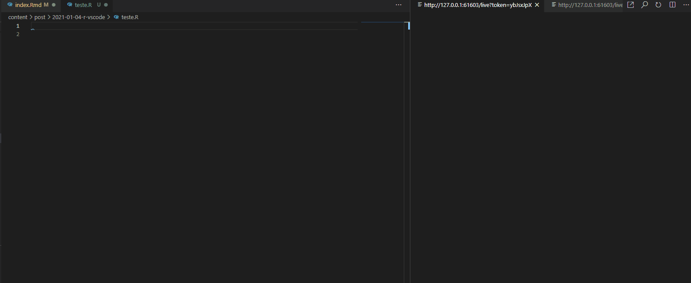
1.2 Integração com Git e GitHub
As extensões GitHub Pull Requests and Issues e Git Lens permitem uma integração profunda com o GitHub, de forma que você não precisa deixar o VSCode. Você pode abrir, comentar e fechar issues e PRs; enviar, visualizar e editar commits; realizar quaisquer comandos bash via command pallet (push, pull, checkout, prune, rebase etc), dentre outros.
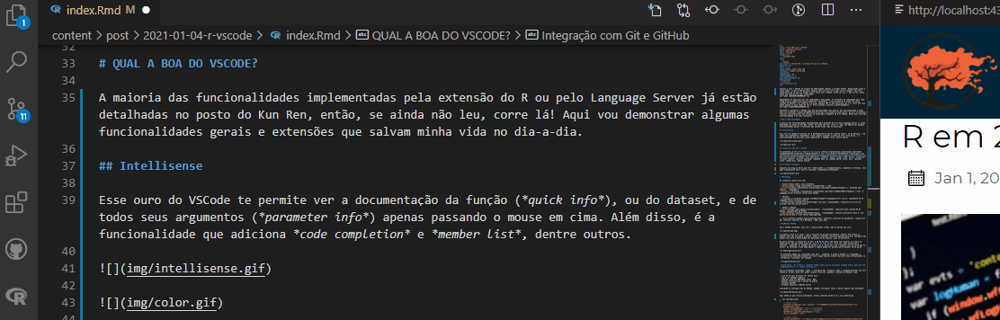
Clicando na issue, o VSCode já abre um novo branch e faz o checkout para você trabalhar nela (e ainda deixa engatilhada uma commit message personalizada!).
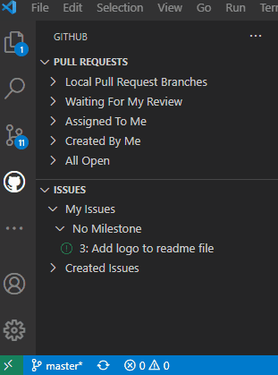
E, ao final do trabalho, basta clicar em criar um novo PR que a própria IDE envia o branch pra origem e traz a interface do PR. Tudo sem abrir o navegador ou o terminal.
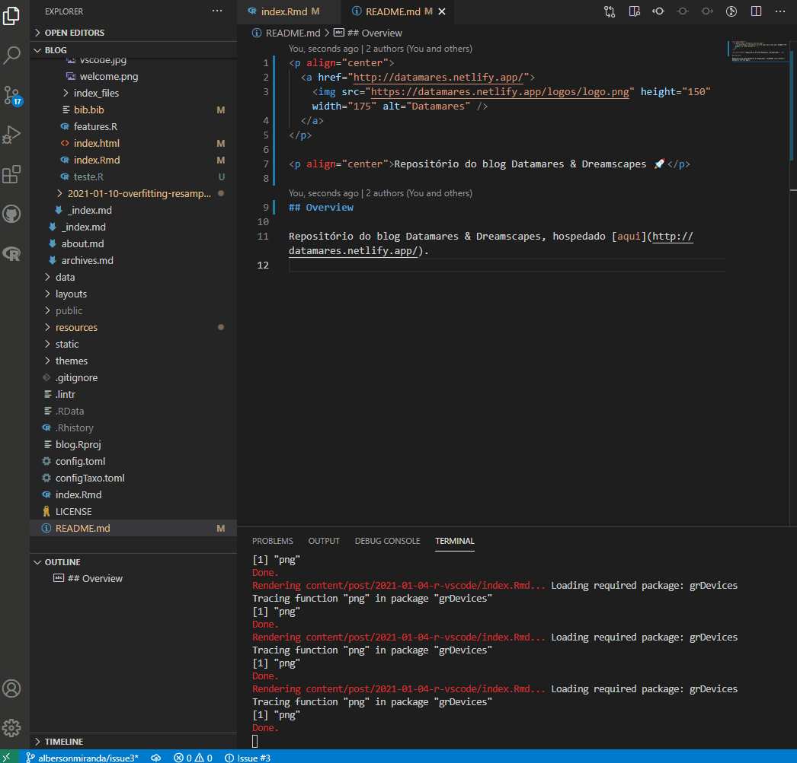
1.3 Múltiplos Terminais
Enquanto seu blog ou Shiny app está renderizando e, consequentemente, ocupando um terminal, você pode simplesmente abrir outro e continuar trabalhando normalmente!
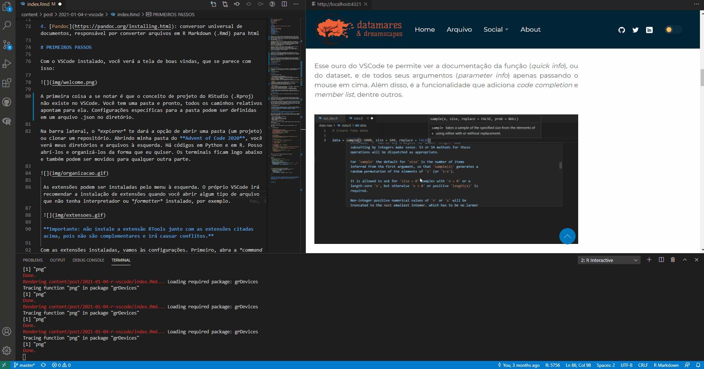
1.4 Draw.io
Este é um exemplo de uma das inúmeras extensões úteis que a comunidade disponibiliza no VSCode. A extensão draw.io integra o diagrams.net ao VSCode. Com ela, podemos fazer diagramas de forma muito rápida e sem precisar de sair da IDE!
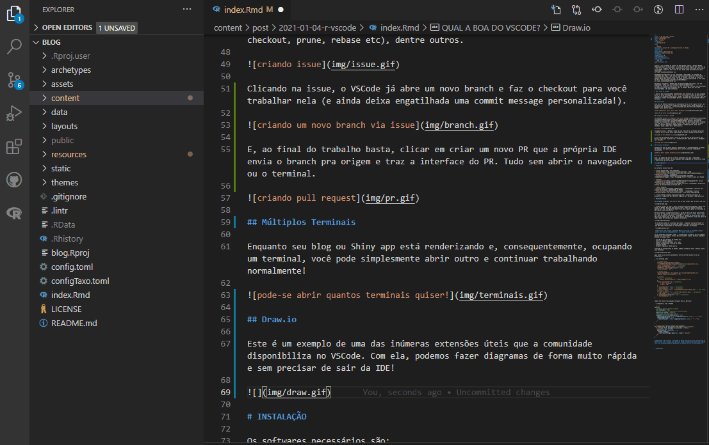
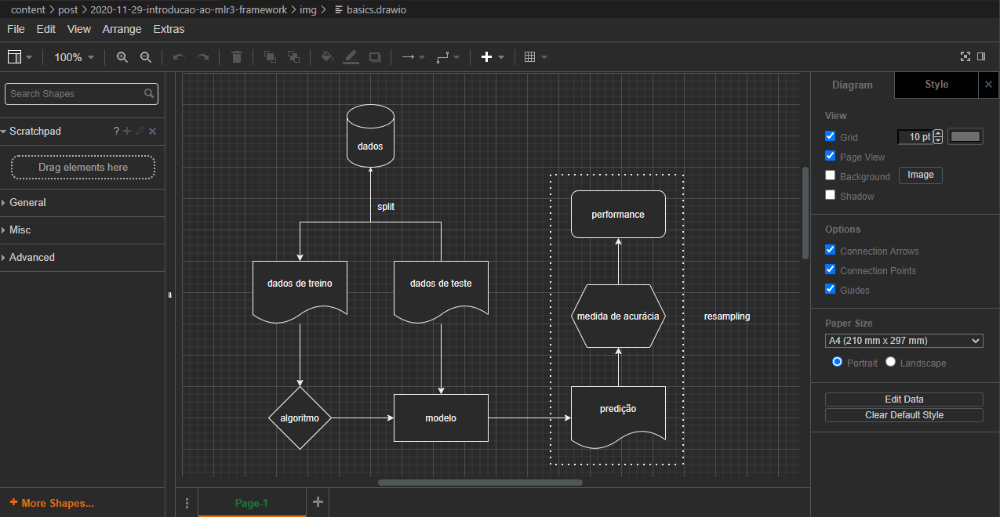
1.6 Windows Subsystem for Linux
Está em uma máquina Windows e já precisou de depurar alguma treta em ambiente Linux? Então você já teve o desprazer de instalar máquinas virtuais ou dual boot (╯°□°）╯︵ ┻━┻
Boa notícia: com a extensão Remote - WSL sua pasta (projeto) é copiada e reaberta em um ambiente Linux, com o terminal bonitinho e pronto para o uso. Tudo isso a um clique de distância!
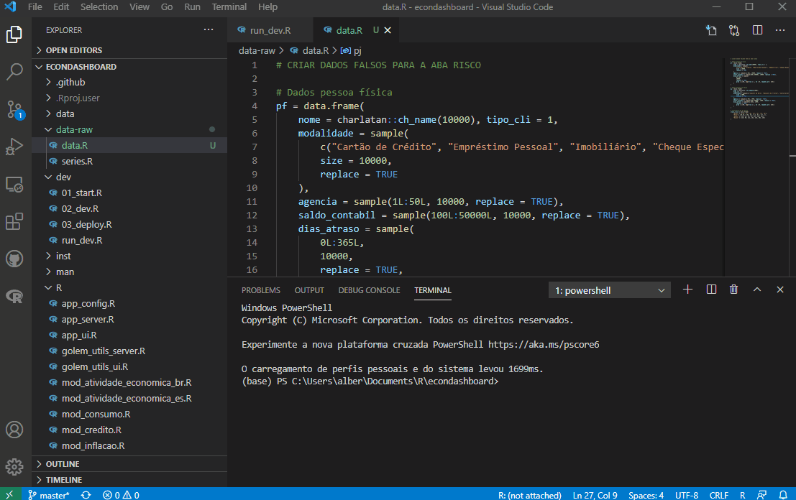
1.7 Linter integrado
A extensão do R no VSCode integra o pacote {lintr} à IDE, de forma que você tem as informações de ajustes de estilo a se fazer em seu código em tempo real.
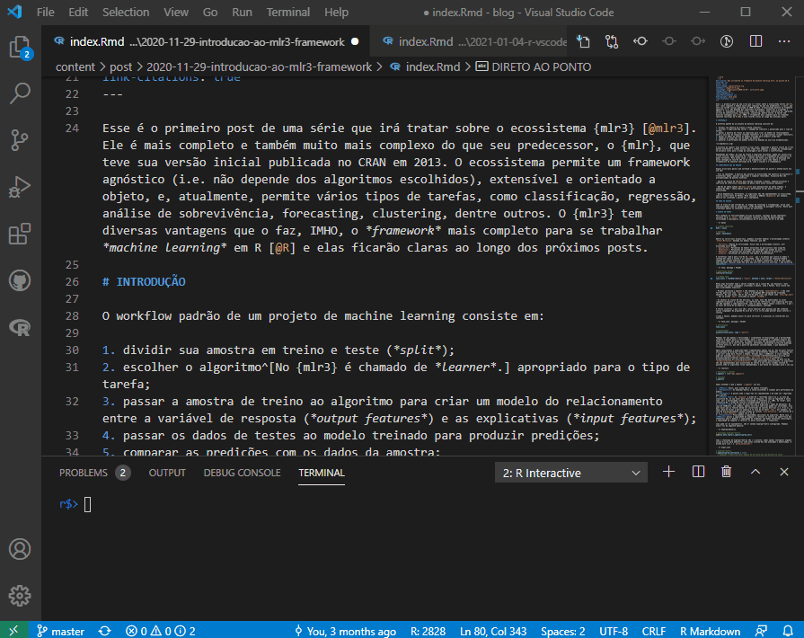
2 CONFIGURAÇÃO
Para começar você só precisa do VSCode e das extensões R e R-LSP. Mas compartilho aqui o setup que considero fornecer a melhor experiência:
- Visual Studio Code e suas extensões:
- VSCode: a IDE
- vscode-R: extensão para suporte à linguagem R
-
vscode-r-lsp: R Language Server Protocol Client para VSCode1
- Pacotes:
- languageserver (Lai 2020): implementação de Language Server Protocol para R
- httpgd (Rupprecht 2021) (recomendado): dispositivo gráfico de servidor http assíncrono para R
- Python & Radian:
- Python (recomendado): requisito para instalação do Radian, implementado em Python
- Radian (recomendado): console alternativo para R, com edição multilinha e rich syntax highlighting
- Pandoc: conversor universal de documentos, responsável por converter arquivos em R Markdown (.Rmd) para html. Você não precisou de instalar antes porque o instalador do RStudio já vem com uma versão do Pandoc incluído.
3 PRIMEIROS PASSOS
Com o VSCode instalado, você verá a tela de boas vindas, que se parece com isso:

A primeira coisa a se notar é que o conceito de projeto do RStudio (.Rproj) não existe no VSCode. Você tem uma pasta e pronto, todos os caminhos relativos apontam para ela. Configurações específicas para a pasta podem ser definidas em um arquivo .json no diretório.
Na barra lateral, o explorer te dará a opção de abrir uma pasta (um projeto) ou clonar um repositório. Abrindo minha pasta do Advent of Code 2020, você verá meus diretórios e arquivos à esquerda. Há códigos em Python e em R. Posso abrí-los e organizá-los da forma que eu quiser. Os terminais ficam logo abaixo e também podem ser movidos para qualquer outra parte.
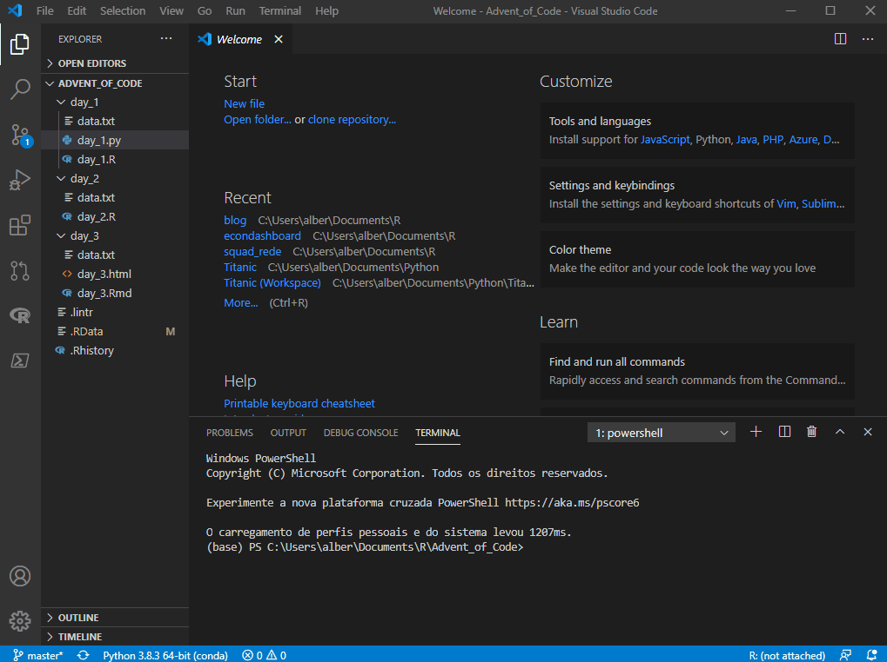
As extensões podem ser instaladas pelo menu à esquerda. O próprio VSCode irá recomendar a instalação de extensões quando você abrir algum tipo de arquivo que não tenha interpretador ou formatter instalado, por exemplo.

Importante: não instale a extensão RTools junto com as extensões citadas acima, pois não são complementares e irá causar conflitos.
Com as extensões instaladas, vamos às configurações. Primeiro, abra a command palette com ctrl+shift+p. Através dela você poderá acessar diversos comandos e atalhos no VSCode, como:
- criação de novo terminal (R, Python etc)
- lançar os RStudio addins
- compilar arquivos RMarkdown (knit .Rmd)
- acessar configurações e teclas de atalho
- instalar pacotes
- formatar arquivos e MUITOS outros
Acessando as configurações do VSCode, podemos configurar tanto o editor quanto suas extensões:
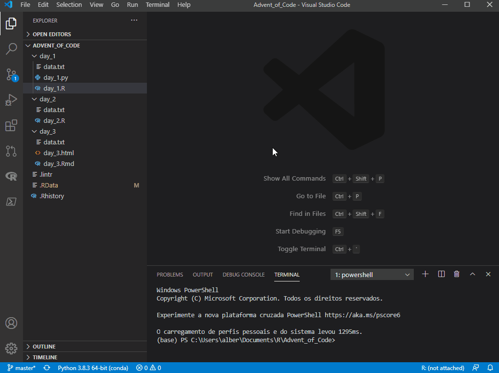
Aqui estão as que utilizo atualmente. Altere conforme necessário e sua preferência.
{
// VSCode setup
"terminal.integrated.shell.windows": "C:\\WINDOWS\\System32\\WindowsPowerShell\\v1.0\\powershell.exe",
"editor.formatOnPaste": true, // recomendado
"editor.formatOnType": true, // recomendado
"diffEditor.ignoreTrimWhitespace": false,
"files.autoSave": "off",
// Python setup
"python.pythonPath": "C:\\...\\anaconda3\\python.exe",
"jupyter.alwaysTrustNotebooks": true,
// R setup
"[r]": { // obrigatório
"editor.defaultFormatter": "REditorSupport.r-lsp"
},
"files.associations": { // obrigatório
"*.rmd": "markdown",
"*.Rmd": "rmd"
},
"r.sessionWatcher": true, // default
"r.bracketedPaste": true, // obrigatório
"r.rterm.windows": "C:\\...\\anaconda3\\Scripts\\radian.exe", // caso tenha instalado o Radian
"r.rpath.windows": "C:\\...\\R\\R-4.0.3\\bin\\R.exe", // obrigatório
"r.lsp.debug": true, // obrigatório
"r.alwaysUseActiveTerminal": true, // obrigatório
"r.rtermSendDelay": 0,
}Também são necessárias algumas configurações no .Rprofile:
Importante: não instalar o {httpgd} ou deixar de incluir essa configuração no .Rprofile vai fazer com que seus gráficos sejam plotados numa janela com tamanho fixo, sem a possibilidade de manuipular o tamanho do plot interativamente.
4 POR FIM
E é isso! Tem ainda um monte de coisas para explorar mas já dá pra ter uma ideia do potencial da ferramenta. Pra quem fica empolgado com anúncio de rainbow parenthesis, eu acho que vale a pena fazer um teste :p
Referências
Lai, Randy. 2020. languageserver: Language Server Protocol. https://CRAN.R-project.org/package=languageserver.
R Core Team. 2020. R: A Language and Environment for Statistical Computing. Vienna, Austria: R Foundation for Statistical Computing. https://www.R-project.org/.
Rupprecht, Florian. 2021. httpgd: A ’HTTP’ Server Graphics Device. https://CRAN.R-project.org/package=httpgd.
Notas de rodapé
agora integrado na extensão vscode-R.↩︎